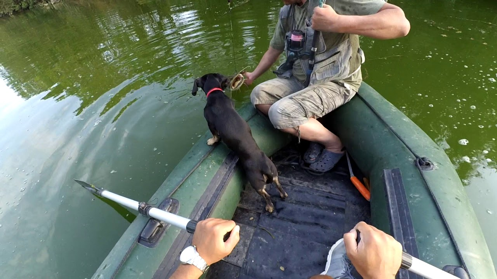
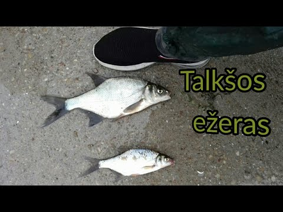

žvejyba - išsamiai DELFI.lt
 Spalio 29 d., ketvirtadienis | Vilnius 11 Kaunas 11 Klaipėda 9 Šiauliai 9 Panevėžys 10 Alytus 10 Nida 9 Raseiniai 9 Utena 11 Mažeikiai 9 Biržai 10 Kėdainiai 11 Kiti miestai Paieška | Pranešti naujieną | LT RU EN | Reklama Kontaktai | Statistika | + Apie Delfi plius Prisijungti Naujausios Skaitomiausios Lietuvoje Sportas Orai Kriminalai Užsienyje Veidai Horoskopai Gyvenimas Mokslas Verslas Daugiau Sveikata Kultūra Auto M360 Politiko akimis Jaunimas Pilietis Nuomonių ringas Multimedija Teisė Medijos Karas Propaganda PT Melo detektorius Demaskuok Ačiū už pamokas Temos | Delfi Video
Naujienos
Naujausios Skaitomiausios Lietuvoje Sportas Kriminalai Užsienyje Veidai GyvenimasVerslas Mokslas Kultūra Sveikata Auto Pilietis Miestai M360 Politiko akimis
Delfi Video
Tiesioginės transliacijos Delfi Diena Delfi Dėmesio centre LaidosNaudinga
Orai Horoskopai Receptai TV Programa Valiutų kursaiDelfi projektai
Multimedija Idėja Lietuvai Kablys Smalsūs EP Atsakingas požiūris Atgal į gyvenimąDelfi kanalai
Agro Būstas Moterys Šeima Kelionės Grynas Stilius Maistas Letena Karjera Bored Panda Sek DelfiMobilusis Delfi
Naujausios žinios Naujienų temos Delfi Temos žvejyba
žvejyba
Žvejyba - žuvų gaudymas.
Ugniagesiai gelbėtojai jau keturias dienas ieško dingusio žvejo (5)
Jau ketvirtą dieną ugniagesiai gelbėtojai Elektrėnų savivaldybėje esančiame Skynimų ežere ieško galimai nuskendusio žvejo spalio 27 d....
Vietinio turizmo džiaugsmai baigėsi: lankytojų srautai krito, nerimaujama dėl karantino (47)
Tokio sezono Lietuvos vietinis turizmas dar nematė. Vieni verslai džiaugiasi rekordine vasara, mat tiek lietuvių svečių dar niekada neturėjo, tačiau...
Macronas: JK ypač reikia dėti daugiau pastangų derybose
Prancūzijos prezidentas Emmanuelis Macronas penktadienį pareiškė, kad Europos Sąjunga i ir, „ypač“, Jungtinei Karalystei reikės dėti daugiau...
Lietuvoje draudžiama lašišų ir šlakių žvejyba (4)
Nuo penktadienio Lietuvoje draudžiama limituota lašišų ir šlakių žvejyba, pranešė Aplinkos apsaugos departamentas.
Nausėda atvyko į Briuselį: ant stalo – strigęs ES milijardų klausimas, naujos sankcijos Lukašenkai (93)
Ketvirtadienį ir penktadienį Briuselyje vyksta Europos Vadovų Taryba ( EVT ), kuriame dalyvauja Lietuvos prezidentas Gitanas Nausėda . Dėl...
Mirties rizika ir gyvybės kaina. Paskaičiuokim! (1)
Gilyn į Rusiją. Mergina su tatuiruotėmis: visi svajoja iš čia išvažiuoti (3)
Macronas dėl „Brexit“ nubrėžė „raudonąją liniją“: įtampa – net tarp jo sąjungininkų (18)
Kaip vyksta žūklė didžiausiame gėlo vandens ežere Kinijoje
Žvejai, norintys pasitraukti iš verslo dėl sumažintų Baltijos menkių žvejybos kvotų, turėtų sulaukti paramos (8)
Kibernetinė duomenų vagystė – sena, kaip internetas, bet vis dar veikia (1)
Linas Jonauskas. Ar liks tinklai Kuršių mariose po rinkimų? (40) 818
Prieš 20 metų „Tris milijonus“ sukūręs Mikutavičius ne iš karto patikėjo šios dainos galybe (11)
Į Vilnių užsukęs Europos Komisijos narys domėjosi užstato sistemos veikla (9)
Precedento neturintis konferencijų nuotolinio vertimo centras: pirmasis žingsnis pokyčių link? 194
Civilinė atsakomybė už gamtai padarytą žalą: ką būtina žinoti kiekvienam? (9)
Gamtosauga ir gyvūnija viduramžiais rūpintasi tikintis naudos: sužinokite, kokios būdavo skiriamos nuobaudos (10)
Nuo viruso pavargusiems lietuviams surado kaimą, kur jo nėra (53)
Konferencija „Mūsų Baltija“ („Our Baltic“)
Gydytojai ilgai nerado prastėjančios Viktoro savijautos priežasčių: diagnozė sutrikdė (1)
Gilyn į Rusiją. Naktiniai Petrozavodsko klubai: o bože, kakoj mužščina
Seimas grąžino tobulinti siūlymą leisti žvejybą Žuvinto ežere (2)
Naujoji kino kūrėjų realybė: premjeros „kaukių fone“, strigę tarptautiniai projektai ir kino teatrų bijantys žiūrovai (20)
Jaukūs rudens savaitgaliai Lietuvoje: neeilinės vietos, kuriose nakvynės užsinorėsite ir jūs (52) 349
Prancūzija ruošiasi chaotiškam JK išstojimui iš ES (2)
Užkalnis. Nidai – „McDonald’s“, „Circle K“, „Lidlą“ ir buldozerių autoūkį (265) 552
TV ekrane dažnai bejausmius ir šaltakraujiškus nusikaltėlius įkūnijantis Mantas Vaitiekūnas: manau, kad esu romantikas
Seimas svarstys prezidento veto dėl žvejybos kvotų verslinei žvejybai skirstymo (1)
Keliautojai Eglė ir Dalius: patogų gyvenimą Lietuvoje iškeitė į iššūkius Balkanuose
Protėviams pakakdavo dirbti 15 val. per savaitę, mums ir 40 – per maža (4)
1 2 3 4 5 6 7 8 9 10 | Populiariausi straipsniai ir video Sekite DELFI REKLAMA KONTAKTAI PRIVATUMAS KARJERA en.delfi.lt ru.delfi.lt pl.delfi.lt delfi.ee rus.delfi.ee delfi.lv ru.delfi.lv UAB DELFI Gynėjų g. 16, 01109 Vilnius +37052045400 info@delfi.lt © 1999-2020 DELFI. Visos teisės saugomos .